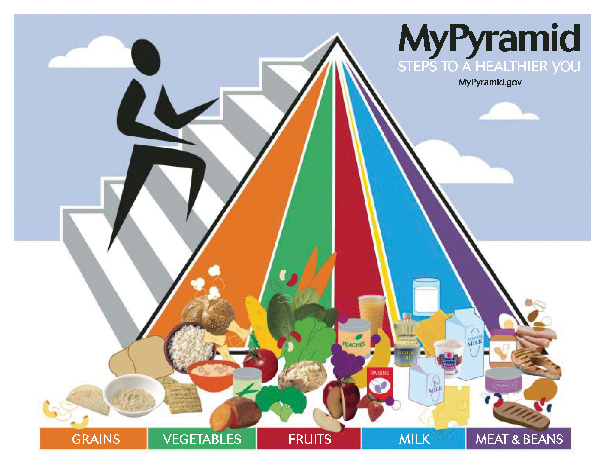
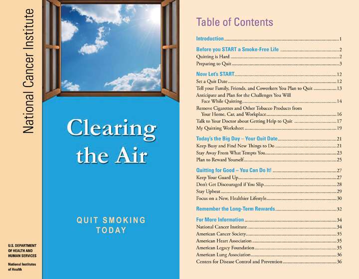
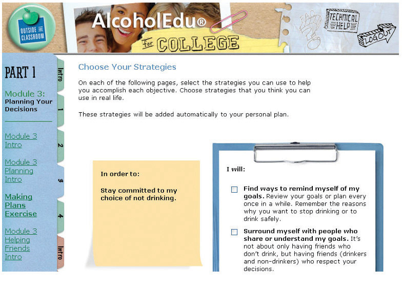

Assess your present knowledge and attitudes.
| Yes | Unsure | No | |
|---|---|---|---|
| 1. I usually eat well and maintain my weight at an appropriate level. | |||
| 2. I get enough regular exercise to consider myself healthy. | |||
| 3. I get enough restful sleep and feel alert throughout the day. | |||
| 4. My attitudes and habits involving smoking, alcohol, and drugs are beneficial to my health. | |||
| 5. I am coping in a healthy way with the everyday stresses of being a student. | |||
| 6. I am generally a happy person. | |||
| 7. I am comfortable with my sexual values and my knowledge of safe sex practices. | |||
| 8. I understand how all of these different health factors interrelate and affect my academic success as a student. |
Think about how you answered the questions above. Be honest with yourself. On a scale of 1 to 10, how would you rate your level of personal health at this time?
| Not very healthy | Very healthy | |||||||||||||||||
|---|---|---|---|---|---|---|---|---|---|---|---|---|---|---|---|---|---|---|
| 1 | 2 | 3 | 4 | 5 | 6 | 7 | 8 | 9 | 10 | |||||||||
In the following list, circle the three most important areas of health in which you think you can improve:
Are there other areas in which you can improve your physical, emotional, and mental health and become happier? Write down other things you feel you need to work on.
__________________________________________________________________
__________________________________________________________________
__________________________________________________________________
Here’s what we’ll work on in this chapter:
Health and wellness are important for everyone—students included. Not only will you do better in school when your health is good, but you’ll be happier as a person. And the habits you develop now will likely persist for years to come. That means that what you’re doing now in terms of personal health will have a huge influence on your health throughout life and can help you avoid many serious diseases.
Considerable research has demonstrated that the basic elements of good health—nutrition, exercise, not abusing substances, stress reduction—are important for preventing disease. You’ll live much longer and happier than someone without good habits. Here are a few of the health problems whose risks can be lowered by healthful habits:
Wellness is more than just avoiding disease. Wellness involves feeling good in every respect, in mind and spirit as well as in body. Good health habits also offer these benefits for your college career:
This chapter examines a wide range of topics, from nutrition, exercise, and sleep to substance abuse and risks related to sexual activity. All of these involve personal attitudes and behaviors. And they are all linked together to one of the biggest problems students face: stress.
Everyone knows about stress, but not everyone knows how to control it. Stress is the great enemy of college success. But once you’ve learned how to reduce it where you can and cope with unavoidable stress, you’ll be well on the road to becoming the best student you can be.
Most Americans have a real problem with food. Overeating causes health problems, but what and how you eat can also affect how well you do as a student.
Americans are eating too much—much more so than in the past. One-third of all Americans twenty years or older are obese. Another third of all adults are overweight. That means that two-thirds of us are not eating well or getting enough exercise for how we eat. There are many intertwined causes of this problem in American culture.
Why are being overweightHaving more body fat than is optimally healthy, often defined as a body mass index between 25 and 29.9. and obesityCondition in which body fat has accumulated to the point of having adverse health effects, often defined as a body mass index of 30 or greater. a problem? Obesity is associated with many medical conditions, including diabetes, cardiovascular disease, and some cancers. Although some health problems may not appear until later in life, diabetes is increasing rapidly in children and teenagers. Worse, the habits young adults may already have or may form during their college years generally continue into later years.
But it’s not just about body weight. Good nutrition is still important even if you don’t have a health problem. What you eat affects how you feel and how well you function mentally and physically. Food affects how well you study and how you do on tests. Doughnuts for breakfast can lower your grades!
If Americans have trouble eating well in an environment that encourages overeating, college students often have it even worse. It seems like food is everywhere, and students are always snacking between classes. Fast food restaurants abound. There may not be time to get back to your dorm or apartment for lunch, and it’s just so easy to grab a quick pastry at the coffee spot as you pass by between classes.
It’s the eating by habit, or mindlessly, that usually gets us in trouble. If we’re mindful instead, however, it’s easy to develop better habits. Take the Nutrition Self-Assessment to evaluate your present eating habits.
Check the appropriate boxes.
| Usually | Sometimes | Seldom | |
|---|---|---|---|
| 1. I take the time to eat breakfast before starting my day. | |||
| 2. I eat lunch rather than snack throughout the day. | |||
| 3. When I’m hungry between meals, I eat fruit rather than chips or cookies. | |||
| 4. I consciously try to include fruit and vegetables with lunch and dinner. | |||
| 5. There is food left on my plate at the end of a meal. | |||
| 6. I try to avoid overeating snacks at night and while studying. | |||
| 7. Over the last year, my eating habits have kept me at an appropriate weight. | |||
| 8. Overall, my eating habits are healthy. |
The key to a good diet is to eat a varied diet with lots of vegetables, fruits, and whole grains and to minimize fats, sugar, and salt. The exact amounts depend on your calorie requirements and activity levels, but you don’t have to count caloriesThe basic unit of food energy; consuming more calories in one’s diet than are used leads to weight gain. or measure and weigh your food to eat well. Following are the U.S. Department of Agriculture’s (USDA) general daily guidelines for a two-thousand-calorie diet.
Grains (6 ounces)
Vegetables (2.5 cups)
Fruits (2 cups)
Milk (3 cups)
Meat and beans (5.5 ounces)
Minimize these (check food labels):
Exercise
Figure 10.2 The USDA MyPyramid emphasizes healthful food choices.United States Department of Agriculture, “MyPyramid: Steps to a Healthier You,” http://www.mypyramid.gov/downloads/MiniPoster.pdf (accessed July 13, 2010).
If you need to lose weight, don’t try to starve yourself. Gradual steady weight loss is healthier and easier. Try these guidelines:
The “freshman fifteen” refers to the weight gain many students experience in their first year of college. Even those whose weight was at an appropriate level often gained unwanted pounds because of changes in their eating habits.
Start by looking back at the boxes you checked in the Nutrition Self-Assessment. Be honest with yourself. If your first choice for a snack is cookies, ice cream, or chips, think about that. If your first choice for lunch is a burger and fries, have you considered other choices?
The most common eating disorders are anorexia, bulimia, and binge eating.
AnorexiaAn eating disorder involving a loss of the desire to eat, often as a result of psychological problems related to how a person perceives her or his appearance. is characterized by excessive weight loss and self-starvation. The individual usually feels “fat” regardless of how thin she or he becomes and may continue to eat less and less. If your BMI is lower than the bottom of the normal range, you may be developing anorexia.
BulimiaAn eating disorder involving frequent binge eating followed by compensatory behaviors such as vomiting. is characterized by frequent binge eating followed by an attempt to compensate for or “undo” the overeating with a behavior such as self-induced vomiting or laxative abuse.
Binge eatingAn eating disorder involving frequent binge eating not followed by compensatory behaviors. disorder is characterized by frequent binge eating without compensatory behavior to “undo” the overeating. Binge eating usually leads to weight gain and eventual obesity.
More than ten million Americans suffer from an eating disorder. The causes are complex, and the individual usually needs help to overcome their obsession. Eating disorders hurt one’s health in a variety of ways and can become life threatening. The signs of a possible eating disorder include the following:
Don’t feel ashamed if you obsess over food or your weight. If your eating habits are affecting your life, it’s time to seek help. As with any other health problem, professionals can provide help and treatment. Talk to your doctor or visit your campus student health center.
BMI calculator. Find out how your weight compares with normal ranges at http://www.cdc.gov/healthyweight/assessing/bmi.
Diet planning. How much should you eat to maintain the same weight? What if you want to lose weight? Find out at http://www.mypyramid.gov.
Calorie counter, nutritional database, and personal diet log. If you’re really serious about losing weight and want to keep a daily log of your progress, try this online tool: http://www.caloriecount.about.com.
Eating disorders. For information about causes and treatment of eating disorders, go to http://www.nationaleatingdisorders.org.
What health problems may result from obesity?
__________________________________________________________________
List three or more snacks that are healthier than cookies, chips, ice cream, and doughnuts.
__________________________________________________________________
How many cups of fruit and vegetables should you eat every day?
__________________________________________________________________
Exercise is good for both body and mind. Indeed, physical activity is almost essential for good health and student success. The physical benefits of regular exercise include the following:
Perhaps more important to students are the mental and psychological benefits:
For all of these reasons, it’s important for college students to regularly exercise or engage in physical activity. Like good nutrition and getting enough sleep, exercise is a key habit that contributes to overall wellnessA state of physical, emotional, mental, and social well-being, not merely the absence of disease. that promotes college success. First, use the Exercise and Activity Self-Assessment to consider your current habits and attitudes.
Check the appropriate boxes.
| Usually | Sometimes | Seldom | |
|---|---|---|---|
| 1. I enjoy physical activity. | |||
| 2. Exercise is a regular part of my life. | |||
| 3. I get my heart rate up for twenty to thirty minutes several times a week. | |||
| 4. I enjoy exercising or engaging in physical activities or sports with others. |
Write your answers.
What physical activities do you enjoy?
__________________________________________________________________
__________________________________________________________________
How often each week do you engage in a physical activity?
__________________________________________________________________
__________________________________________________________________
If you feel you’re not getting much exercise, what stands in your way?
__________________________________________________________________
__________________________________________________________________
Overall, do you think you get enough exercise to be healthy?
__________________________________________________________________
__________________________________________________________________
Do you feel a lot of stress in your life?
__________________________________________________________________
__________________________________________________________________
Do you frequently have trouble getting to sleep?
__________________________________________________________________
__________________________________________________________________
With aerobic exerciseBrisk physical activity that requires the heart and lungs to work harder to meet the body’s increased oxygen needs., your heart and lungs are working hard enough to improve your cardiovascular fitness. This generally means moving fast enough to increase your heart rate and breathing. For health and stress-reducing benefits, try to exercise at least three days a week for at least twenty to thirty minutes at a time. If you really enjoy exercise and are motivated, you may exercise as often as six days a week, but take at least one day of rest. When you’re first starting out, or if you’ve been inactive for a while, take it gradually, and let your body adjust between sessions. But the old expression “No pain, no gain” is not true, regardless of what some past gym teacher may have said! If you feel pain in any activity, stop or cut back. The way to build up strength and endurance is through a plan that is consistent and gradual.
For exercise to have aerobic benefits, try to keep your heart rate in the target heart rateThe level of heartbeat that gives you the best workout: about 60 to 85 percent of your maximum heart rate, which is typically calculated as 220 minus your age. zone for at least twenty to thirty minutes. The target heart rate is 60 percent to 85 percent of your maximum heart rate, which can be calculated as 220 minus your age. For example, if you are 24 years old, your maximum heart rate is calculated as 196, and your target heart rate is 118 to 166 beats per minute. If you are just starting an exercise program, stay at the lower end of this range and gradually work up over a few weeks. “Additional Resources” below includes an online calculator that estimates your target heart rate depending on your present level of fitness.
Most important, find a type of exercise or activity that you enjoy—or else you won’t stick with it. This can be as simple and easy as a brisk walk or slow jog through a park or across campus. Swimming is excellent exercise, but so is dancing. Think about what you like to do and explore activities that provide exercise while you’re having fun.
Do whatever you need to make your chosen activity enjoyable. Many people listen to music and some even read when using workout equipment. Try different activities to prevent boredom. You also gain by taking the stairs instead of elevators, walking farther across campus instead of parking as close to your destination as you can get, and so on.
Exercise with a friend is more enjoyable, including jogging or biking together. Some campuses have installed equipment for students to play Dance Dance Revolution. Many Nintendo Wii games can get your heart rate up.
You may stay more motivated using exercise equipment. An inexpensive pedometer can track your progress walking or jogging, or a bike computer can monitor your speed and time. A heart rate monitor makes it easy to stay in your target zone; many models also calculate calories burned. Some devices can input your exercise into your computer to track your progress and make a chart of your improvements.
The biggest obstacle to getting enough exercise, many students say, is a lack of time. Actually, we all have the time, if we manage it well. Build exercise into your weekly schedule on selected days. Eventually you’ll find that regular exercise actually saves you time because you’re sleeping better and concentrating better. Time you used to fritter away is now used for activity that provides many benefits.
Most campuses have resources to make exercise easier and more enjoyable for their students. Take a look around and think about what you might enjoy. A fitness center may offer exercise equipment. There may be regularly scheduled aerobic or spin classes. You don’t have to be an athlete to enjoy casual sports such as playing tennis or shooting hoops with a friend. If you like more organized team sports, try intramural sports.
Exercise guidelines and more information. See http://www.cdc.gov/physicalactivity/everyone/guidelines/index.html.
Target heart rate calculator. Find your target heart rate to experience the benefits of aerobic exercise (based on age only) at http://www.mayoclinic.com/health/target-heart-rate/SM00083.
Target heart rate calculator based on age and current fitness level. See http://exercise.about.com/cs/fitnesstools/l/bl_THR.htm.
List at least two ways to make exercise more fun.
___________________________________________________
Like good nutrition and exercise, adequate sleep is crucial for wellness and success. Sleep is particularly important for students because there seem to be so many time pressures—to attend class, study, maintain a social life, and perhaps work—that most college students have difficulty getting enough. Yet sleep is critical for concentrating well. First, use the Sleep Self-Assessment to consider your current habits and attitudes.
Check the appropriate boxes.
| Usually | Sometimes | Seldom | |
|---|---|---|---|
| 1. I usually get enough sleep. | |||
| 2. I feel drowsy or unfocused during the day. | |||
| 3. I take a nap when I need more sleep. | |||
| 4. I have fallen asleep in class or had trouble staying awake. | |||
| 5. I have fallen asleep while studying. | |||
| 6. I have pulled an “all-nighter” when studying for a test or writing a class paper. |
Write your answers.
How many hours of sleep do you usually get on weeknights?
__________________________________________________________________
__________________________________________________________________
How many hours of sleep do you usually get on weekends?
__________________________________________________________________
__________________________________________________________________
How would you rank the importance of sleep in relation to studying, working, spending time with friends, and other activities?
__________________________________________________________________
__________________________________________________________________
How many hours of sleep do you think you ideally need?
__________________________________________________________________
__________________________________________________________________
Generally, do you believe you are getting as much sleep as you think you need?
__________________________________________________________________
__________________________________________________________________
You may not realize the benefits of sleep, or the problems associated with being sleep deprived, because most likely you’ve had the same sleep habits for a long time. Or maybe you know you’re getting less sleep now, but with all the changes in your life, how can you tell if some of your stress or problems studying are related to not enough sleep?
On the positive side, a healthy amount of sleep has the following benefits:
In contrast, not getting enough sleep over time can lead to a wide range of health issues and student problems. Sleep deprivationA chronic lack of sufficient restorative sleep. can have the following consequences:
College students are the most sleep-deprived population group in the country. With so much to do, who has time for sleep?
Most people need seven to nine hours of sleep a night, and the average is around eight. Some say they need much less than that, but often their behavior during the day shows they are actually sleep deprived. Some genuinely need only about six hours a night. New research indicates there may be a “sleep gene” that determines how much sleep a person needs. So how much sleep do you actually need?
There is no simple answer, in part because the quality of sleep is just as important as the number of hours a person sleeps. Sleeping fitfully for nine hours and waking during the night is usually worse than seven or eight hours of good sleep, so you can’t simply count the hours. Do you usually feel rested and alert all day long? Do you rise from bed easily in the morning without struggling with the alarm clock? Do you have no trouble paying attention to your instructors and never feel sleepy in a lecture class? Are you not continually driven to drink more coffee or caffeine-heavy “power drinks” to stay attentive? Are you able to get through work without feeling exhausted? If you answered yes to all of these, you likely are in that 10 percent to 15 percent of college students who consistently get enough sleep.
You have to allow yourself enough time for a good night’s sleep. Using the time management strategies discussed in Chapter 2 "Staying Motivated, Organized, and On Track", schedule at least eight hours for sleeping every night. If you still don’t feel alert and energetic during the day, try increasing this to nine hours. Keep a sleep journal, and within a couple weeks you’ll know how much sleep you need and will be on the road to making new habits to ensure you get it.
If you can’t fall asleep after ten to fifteen minutes in bed, it’s better to get up and do something else rather than lie there fitfully for hours. Do something you find restful (or boring). Read, or listen to a recorded book. Go back to bed when you’re sleepy.
If you frequently cannot get to sleep or are often awake for a long time during the night, you may be suffering from insomniaAn inability to sleep; chronic sleeplessness., a medical condition. Resist the temptation to try over-the-counter sleep aids. If you have tried the tips listed here and still cannot sleep, talk with your health-care provider or visit the student health clinic. Many remedies are available for those with a true sleep problem.
List at least three things you should not do before going to bed in order to get a good night’s sleep.
__________________________________________________________________
Identify one or two things you can do as a regular presleep routine to help you relax and wind down.
__________________________________________________________________
SubstanceA drug or other chemical typically used in an overindulgent manner for its effects on the body or mind. is the word health professionals use for most things you might take into your body besides food. When people talk about substances, they often mean drugsA substance used for treating, curing, or preventing disease (prescription and over-the-counter drugs) or used without medical reason to alter the body or mind (illegal drugs or prescription drugs used without prescription).—but alcohol and nicotine are also drugs and are considered substances.
Substances—any kind of drug—have effects on the body and mind. People use these substances for their effects. But many substances have negative effects, including being physically or psychologically addictiveHaving the characteristic of becoming physically or psychologically habit forming, causing cravings; the person becomes dependent on the substance and suffers adverse effects on withdrawal.. What is important with any substance is to be aware of its effects on your health and on your life as a student, and to make smart choices. Use of any substance to the extent that it has negative effects is generally considered abuseThe use of illegal drugs or the use of prescription or over-the-counter drugs or alcohol for other than their intended purposes or in excessive amounts..
First, consider your own habits and attitudes with the Substance Use Self-Assessment.
Check the appropriate boxes.
| Daily | Sometimes | Never | |
|---|---|---|---|
| 1. I smoke cigarettes or use smokeless tobacco. | |||
| 2. I drink beer or other alcohol. | |||
| 3. I have missed a class because I was hung over from drinking the night before. | |||
| 4. I have taken a medication that was not prescribed for me. | |||
| 5. I have used an illegal drug. |
Write your answers.
If you smoke cigarettes, how many a day do you usually smoke?
__________________________________________________________________
__________________________________________________________________
If you drink alcohol (including beer), on how many days in a typical week do you have at least one drink?
__________________________________________________________________
__________________________________________________________________
If you drink at parties or when out with friends, how many drinks (or beers) do you typically have at one time?
__________________________________________________________________
__________________________________________________________________
If you use a pharmaceutical or illegal drug, how often do you take it?
__________________________________________________________________
__________________________________________________________________
Are your habits of smoking, drinking, or using other drugs affecting your studies or grades?
__________________________________________________________________
__________________________________________________________________
Everyone knows smoking is harmful to one’s health. Smoking causes cancer and lung and heart disease. Most adult smokers continue smoking not because they really think it won’t harm them but because it’s very difficult to stop.
If you have never smoked or used smokeless tobacco, feel good about your choices. But read this section anyway because you may have friends now or in the future who smoke, and it’s important to understand this behavior. If you do smoke, even only rarely as a “social smoker,” be honest with yourself—wouldn’t you like to stop if you thought you could without suffering? Simply by being in college now, you’ve shown that you care about your future and your life. You likely care about your health, too.
Many young smokers think there is plenty of time to quit later. Social smokers, who may have a cigarette only occasionally with a friend, usually think they won’t develop a habit. But smokers are fooling themselves. NicotineA habit-forming stimulant found in tobacco, which raises blood pressure, increases heart rate, and has toxic effects throughout the body. is one of the most addictive drugs in our society today. Admitting this to yourself is the first step toward becoming smoke free.
First, the good news. Stopping smoking brings immediate health benefits, and the benefits get better over time. Just twenty minutes after quitting, your heart rate drops. After two weeks to three months, your heart attack risk begins to drop and your lung function begins to improve. After one year, your added risk of coronary heart diseaseA heart disease caused by damage to the arteries that supply blood and oxygen to the heart. is half that of a smoker’s. And every year your health continues to improve.
Stopping isn’t easy. Many ex-smokers say it was the hardest thing they ever did. Still, over 45 million adults in the United States once smoked and then successfully stopped.
You know it’s worth the effort. And it’s easier if you think it through and make a good plan. There’s lots of help available. Before you quit, the National Cancer Institute suggests you START with these five important steps:
To get ready, download the booklet “Clearing the Air: Quit Smoking Today” at http://www.smokefree.gov. The table of contents of that booklet (Figure 10.3) outlines the basic steps that will help you be successful.
Figure 10.3
“Clearing the Air,” a downloadable booklet available at http://www.smokefree.gov, presents a plan for stopping smoking that works for many smokers.
Remember that the urge to smoke will come and go. Try to wait it out. Use these tips:
Learn to relax quickly by taking deep breaths.
A lot of people are not able to stop smoking by themselves, so don’t feel bad if you aren’t successful the first try. Ask your doctor about other ways to stop. Maybe nicotine-replacement therapyThe use of a nicotine product (in gum, patches, etc.) intended to replace nicotine obtained from smoking, thereby making it easier for the person to stop smoking. is what you need. Maybe you need prescription medication. Stop by your college’s student health center and learn about smoking cessationThe general term for any of many different programs developed to help people stop smoking, including use of medications, counseling, group therapy and support, hypnosis, and other programs. programs. Your doctor and other health professionals at your school have a lot of experience helping people—they can help you find what works for you.
Of all the issues that can affect a student’s health and success in college, drinking causes more problems than anything else. Everyone knows what happens when you drink too much. Your judgment is impaired and you may behave in risky ways. Your health may be affected. Your studies likely are affected.
Most college students report drinking at least some alcohol at some time—and even those who do not drink are often affected by others who do. Here are a few facts about alcohol use among college students from the National Institute on Alcohol Abuse and Alcoholism:
So why is drinking so popular if it causes so many problems? You probably already know the answer to that: most college students say they have more fun when drinking. They’re not going to stop drinking just because someone lectures them about it.
Like everything else that affects your health and happiness—eating, exercise, use of other substances—drinking is a matter of personal choice. Like most decisions we all face, there are trade-offs. The most that anyone can reasonably ask of you is to be smart in your decisions. That means understanding the effects of alcohol and deciding to take control.
Myth: I can drink and still be in control.
Fact: Drinking impairs your judgment, which increases the likelihood that you will do something you’ll later regret such as having unprotected sex, being involved in date rape, damaging property, or being victimized by others.
Myth: Drinking isn’t all that dangerous.
Fact: One in three 18- to 24-year-olds admitted to emergency rooms for serious injuries is intoxicated. And alcohol is also associated with homicides, suicides, and drownings.
Myth: I can sober up quickly if I have to.
Fact: It takes about three hours to eliminate the alcohol content of two drinks, depending on your weight. Nothing can speed up this process—not even coffee or cold showers.
Myth: I can manage to drive well enough after a few drinks.
Fact: About one-half of all fatal traffic crashes among 18- to 24-year-olds involve alcohol. If you are under 21, driving after drinking is illegal and you could lose your license.
Myth: Beer doesn’t have as much alcohol as hard liquor.
Fact: A 12-ounce bottle of beer has the same amount of alcohol as a standard shot of 80-proof liquor (either straight or in a mixed drink) or 5 ounces of wine.National Institute on Alcohol Abuse and Alcoholism, “Alcohol Myths,” College Drinking—Changing the Culture, http://www.collegedrinkingprevention.gov/CollegeStudents/alcoholMyths.aspx (accessed July 13, 2010).
Colleges have recognized the problems resulting from underage and excessive alcohol use, and in recent years they have designed programs to help students become more aware of the problems. If you are a new student, you may be in such a program now. Two popular online programs, AlcoholEdu and My Student Body, are used at many schools.
Figure 10.4 The AlcoholEdu Online Alcohol Awareness Program from Outside the Classroom
The goal of these courses is not to preach against drinking. You’ll learn more about the effects of alcohol on the body and mind. You’ll learn about responsible drinking versus high-risk drinking. You’ll think about your own attitudes and learn coping strategies to help prevent or manage a problem. These courses are designed for you—to help you succeed in college and life. They’re worth taking seriously.
There’s no magic number for how many drinks a person can have and how often. If you’re of legal drinking age, you may not experience any problems if you have one or two drinks from time to time. “Moderate drinking” is not more than two drinks per day for men or one per day for women. More than that is heavy drinking.
As with most things that can affect your health and your well-being as a student, what’s important is being honest with yourself. You’re likely drinking too much or too often if
Did you know that one night of heavy drinking can affect how well you think for two or three weeks afterward? This can really affect how well you perform as a student.
Most of us can remember times when we were influenced by our friends and others around us to behave in some way we might not have otherwise. Say, for example, I have a big test tomorrow, and I’ve been studying for hours, and just when I knock off to relax for a while, a friend stops by with a six-pack of beer. I’d planned to get to bed early, but my friend pops open a beer and sticks it in my hand, saying it will help me relax. So I tell myself just one, or maybe two—after all, that’s not really drinking. And let’s say I stop after two (or three) and get to bed. Maybe I don’t sleep quite as well, but I still pass the test in the morning. So—was that peer pressure or my decision?
There are no easy answers! What matters is that you think about your own habits and choices and how to take control of your own life.
Read this case study about a student who joins a college fraternity and feels pressured to drink. You may be very different from him—maybe you’re older and work full time and are taking night courses—but you still should be able to relate to his issues. As you answer the questions about his situation, think about how the same questions might also apply to someone in your own situation.
Pressured to Drink
When John decided to pledge a fraternity in college, he knew there would likely be drinking in the house. He had had a few beers at parties through high school but had never binged and felt there was nothing wrong with that as long as he kept it under control. But he was surprised how much alcohol flowed through the fraternity house, and not just at parties—and the house advisor just seemed to look the other way. He wanted to fit in, so he usually had a few whenever his roommate or others called him away from studying. One night he definitely drank too much. He slept late, missed his first two classes, and felt rotten most of the day. He told himself he’d drink only on weekends and only in moderation. Being underage didn’t bother him, but his grades hadn’t been all that great in high school, and he didn’t want to screw up his first year in college. But it was only one day before some of the older fraternity brothers interrupted his studying again and stuck a beer in his hand. He didn’t know what to do.
Is John at risk for developing any problems if he tries to fit in with the drinkers while promising himself he would drink only moderately? Why or why not?
__________________________________________________________________
__________________________________________________________________
If John decides to hold firm and drink only on weekends when he didn’t have to study, is he still at any risk for developing a problem? Why or why not, depending on what circumstances?
__________________________________________________________________
__________________________________________________________________
If John decides to tell his fraternity brothers he does not want to drink, what should he say or do if they continue to pressure him?
__________________________________________________________________
__________________________________________________________________
If you think you may be drinking too much, then you probably are. Can you stop—or drink moderately if you are of age—and still have fun with your friends? Of course. Here are some tips for enjoying yourself in social situations when others are drinking:
Because drinking is a serious issue in many places, it’s a good idea to know what to do if you find yourself with a friend who has had too much to drink:
Visit the student health center or talk with your college counselor. They understand how you feel and have a lot of experience with students feeling the same way. They can help.
People use drugs for the same reasons people use alcohol. They say they enjoy getting high. They may say a drug helps them relax or unwind, have fun, enjoy the company of others, or escape the pressures of being a student. While alcohol is a legal drug for those above the drinking age, most other drugs—including the use of many prescription drugsA drug prescribed to a specific person for a specific medical condition by a health-care provider; many prescription drugs are illegal when used by someone other than the person for whom it was prescribed. not prescribed for the person taking them—are illegal. They usually involve more serious legal consequences if the user is caught. Some people may feel there’s safety in numbers: if a lot of people are using a drug, or drinking, then how can it be too bad? But other drugs carry the same risks as alcohol for health problems, a risk of death or injury, and a serious impact on your ability to do well as a student.
As with alcohol, the choice is yours. What’s important is to understand what you’re doing and make smart choices. What’s the gain, and what are the risks and costs?
While society may seem to condone drinking, and the laws regarding underage drinking or being drunk in public may not seem too harsh, the legal reality of being caught with an illegal drug can impact the rest of your life. Arrest and conviction may result in being expelled from college—even with a first offense. A conviction is a permanent legal record that can keep you from getting the job you may be going to college for.
Although the effects of different drugs vary widely, a single use of a drug can have serious effects and consequences. Even if you’re told that a pill is a prescription medication whose effects are mild or safe, can you really be sure of the exact ingredients and strength of that pill? Do you fully understand how it can affect you with repeated use? Can it be addictive? Could it show up on an unexpected random drug test at work?
Table 10.1 "Common Prescription and Illegal Drugs on Campuses" lists some of the possible effects of drugs used by college students. Good decisions also involve being honest with oneself. Why do I use (or am thinking about using) this drug? Am I trying to escape some aspect of my life (stress, a bad job, a boring class)? Could the effects of using this drug be worse than what I’m trying to escape?
Table 10.1 Common Prescription and Illegal Drugs on Campuses
| Drug and Common Names | Intended Effects | Adverse Effects | Common Overdose Effects |
|---|---|---|---|
| Anabolic Steroids | Muscle development | Liver cancer, sterility, masculine traits in women and feminine traits in men, aggression, depression, mood swings | — |
| Barbiturates | Reduced anxiety, feelings of well-being, lowered inhibitions | Addiction; slowed pulse and breathing; lowered blood pressure; poor concentration; fatigue; confusion; impaired coordination, memory, and judgment | Coma, respiratory arrest, death |
| Prescription Opioids: OxyContin, Vicodin, Demerol | Pain relief, euphoria | Addiction, nausea, constipation, confusion, sedation, respiratory depression | Respiratory arrest, unconsciousness, coma, death |
| Heroin | Pain relief, anxiety reduction | Addiction, slurred speech, impaired vision, respiratory depression | Respiratory failure, coma, death |
| Morphine | Pain relief, euphoria | Addiction, drowsiness, nausea, constipation, confusion, sedation, respiratory depression | Respiratory arrest, unconsciousness, coma, death |
| Ritalin | Stimulant: mood elevation, increased feelings of energy | Fever, severe headaches, paranoia, excessive repetition of movements and meaningless tasks, tremors, muscle twitching | Confusion, seizures, aggressiveness, hallucinations |
| Amphetamines: Dexedrine, Benzedrine, methamphetamine | Stimulant: mood elevation, increased feelings of energy | Addiction, irritability, anxiety, increased blood pressure, paranoia, psychosis, depression, aggression, convulsions, dizziness, sleeplessness | Convulsions, death |
| Cocaine, Crack | Stimulant: mood elevation, increased feelings of energy | Addiction, paranoia, hallucinations, aggression, insomnia, and depression, elevated blood pressure and heart rate, increased respiratory rate, insomnia, anxiety, restlessness, irritability | Seizures, heart attack, death |
| Ecstasy | Stimulant: mood elevation | Panic, anxiety, depression, paranoia, nausea, blurred vision, increased heart rate, hallucinations, fainting, chills, sleep problems | Seizures, vomiting, heart attack, death |
| Marijuana, Hash | Euphoria | Impaired or reduced comprehension, altered sense of time; reduced ability to perform tasks requiring concentration and coordination; paranoia; intense anxiety attacks; impairments in learning, memory, perception, and judgment; difficulty speaking, listening effectively, thinking, retaining knowledge, problem solving | — |
| LSD | Hallucinogen: altered states of perception and feeling | Elevated blood pressure, sleeplessness, tremors, chronic recurring hallucinations (flashbacks) | — |
If you have questions or concerns related to drug use, your doctor or student health center can help. Check these Web sites for additional information:
“Social smoking”—having a cigarette just every now and then with a friend—may not have significant health effects, but why is this still a problem?
__________________________________________________________________
For each of the following statements about drinking, circle T for true or F for false:
| T | F | After a few drinks, you can sober up more quickly by eating or drinking coffee. |
| T | F | A fourth of college students experience academic consequences from their drinking. |
| T | F | A 12-ounce beer has about half the alcohol of a standard shot of 80-proof liquor. |
| T | F | Moderate drinking is defined as no more than four drinks a day for men or two drinks a day for women. |
| T | F | A night of heavy drinking affects your thinking ability for up to two weeks afterward. |
If smoking marijuana relaxes you, can it minimize the stress you may feel over time in your life? Why or why not?
__________________________________________________________________
We all live with occasional stress. Since college students often feel even more stress than most people, it’s important to understand it and learn ways to deal with it so that it doesn’t disrupt your life.
StressA natural response of the body and mind to a demand or challenge, often associated with feelings of tension and negative emotions. is a natural response of the body and mind to a demand or challenge. The thing that causes stress, called a stressorAnything, such as an event or situation, that causes a person stress., captures our attention and causes a physical and emotional reaction. Stressors include physical threats, such as a car we suddenly see coming at us too fast, and the stress reaction likely includes jumping out of the way—with our heart beating fast and other physical changes. Most of our stressors are not physical threats but situations or events like an upcoming test or an emotional break-up. Stressors also include long-lasting emotional and mental concerns such as worries about money or finding a job. Take the Stress Self-Assessment.
Check the appropriate boxes.
| Daily | Sometimes | Never | |
|---|---|---|---|
| 1. I feel mild stress that does not disrupt my everyday life. | |||
| 2. I am sometimes so stressed out that I have trouble with my routine activities. | |||
| 3. I find myself eating or drinking just because I’m feeling stressed. | |||
| 4. I have lain awake at night unable to sleep because I was feeling stressed. | |||
| 5. Stress has affected my relationships with other people. |
Write your answers.
What is the number one cause of stress in your life?
__________________________________________________________________
__________________________________________________________________
What else causes you stress?
__________________________________________________________________
__________________________________________________________________
What effect does stress have on your studies and academic performance?
__________________________________________________________________
__________________________________________________________________
Regardless of the sources of your own stress, what do you think you can do to better cope with the stress you can’t avoid?
__________________________________________________________________
__________________________________________________________________
Not all stressors are bad things. Exciting, positive things also cause a type of stress, called eustressA positive and stimulating kind or level of stress.. Falling in love, getting an unexpected sum of money, acing an exam you’d worried about—all of these are positive things that affect the body and mind in ways similar to negative stress: you can’t help thinking about it, you may lose your appetite and lie awake at night, and your routine life may be momentarily disrupted.
But the kind of stress that causes most trouble results from negative stressors. Life events that usually cause significant stress include the following:
Life events like these usually cause a lot of stress that may begin suddenly and disrupt one’s life in many ways. Fortunately, these stressors do not occur every day and eventually end—though they can be very severe and disruptive when experienced. Some major life stresses, such as having a parent or family member with a serious illness, can last a long time and may require professional help to cope with them.
Everyday kinds of stressors are far more common but can add up and produce as much stress as a major life event:
Take a moment and reflect on the list above. How many of these stressors have you experienced in the last month? The last year? Circle all the ones that you have experienced. Now go back to your Stress Self-Assessment and look at what you wrote there for causes of your stress. Write any additional things that cause you stress on the blank lines above.
How many stressors have you circled and written in? There is no magic number of stressors that an “average” or “normal” college student experiences—because everyone is unique. In addition, stressors come and go: the stress caused by a midterm exam tomorrow morning may be gone by noon, replaced by feeling good about how you did. Still, most college students are likely to circle about half the items on this list.
But it’s not the number of stressors that counts. You might have circled only one item on that list—but it could produce so much stress for you that you’re just as stressed out as someone else who circled all of them. The point of this exercise is to start by understanding what causes your own stress as a base for learning what to do about it.
Physically, stress prepares us for action: the classic “fight-or-flight” reaction when confronted with a danger. Our heart is pumping fast, and we’re breathing faster to supply the muscles with energy to fight or flee. Many physical effects in the body prepare us for whatever actions we may need to take to survive a threat.
But what about nonphysical stressors, like worrying about grades? Are there any positive effects there? Imagine what life would feel like if you never had worries, never felt any stress at all. If you never worried about grades or doing well on a test, how much studying would you do for it? If you never thought at all about money, would you make any effort to save it or make it? Obviously, stress can be a good thing when it motivates us to do something, whether it’s study, work, resolving a conflict with another, and so on. So it’s not stress itself that’s negative—it’s unresolved or persistent stress that starts to have unhealthy effects. Chronic (long-term) stress is associated with many physical changes and illnesses, including the following:
Chronic or acute (intense short-term) stress also affects our minds and emotions in many ways:
No wonder we view stress as such a negative thing! As much as we’d like to eliminate all stressors,however, it just can’t happen. Too many things in the real world cause stress and always will.
Since many stressors are unavoidable, the question is what to do about the resulting stress. A person can try to ignore or deny stress for a while, but then it keeps building and starts causing all those problems. So we have to do something.
Consider first what you have typically done in the past when you felt most stressed; use the Past Stress-Reduction Habits Self-Assessment.
On a scale of 1 to 5, rate each of the following behaviors for how often you have experienced it because of high stress levels.
| Stress Response | Never | Seldom | Sometimes | Often | Usually | Always |
|---|---|---|---|---|---|---|
| 1. Drinking alcohol | 0 | 1 | 2 | 3 | 4 | 5 |
| 2. Drinking lots of coffee | 0 | 1 | 2 | 3 | 4 | 5 |
| 3. Sleeping a lot | 0 | 1 | 2 | 3 | 4 | 5 |
| 4. Eating too much | 0 | 1 | 2 | 3 | 4 | 5 |
| 5. Eating too little | 0 | 1 | 2 | 3 | 4 | 5 |
| 6. Smoking or drugs | 0 | 1 | 2 | 3 | 4 | 5 |
| 7. Having arguments | 0 | 1 | 2 | 3 | 4 | 5 |
| 8. Sitting around depressed | 0 | 1 | 2 | 3 | 4 | 5 |
| 9. Watching television or surfing the Web | 0 | 1 | 2 | 3 | 4 | 5 |
| 10. Complaining to friends | 0 | 1 | 2 | 3 | 4 | 5 |
| 11. Exercising, jogging, biking | 0 | 1 | 2 | 3 | 4 | 5 |
| 12. Practicing yoga or tai chi | 0 | 1 | 2 | 3 | 4 | 5 |
| 13. Meditating | 0 | 1 | 2 | 3 | 4 | 5 |
| 14. Using relaxation techniques | 0 | 1 | 2 | 3 | 4 | 5 |
| 15. Talking with an instructor or counselor | 0 | 1 | 2 | 3 | 4 | 5 |
Total your scores for questions 1–10: _______________
Total your scores for questions 11–15: _______________
Subtract the second number from the first: _______________
Interpretation: If the subtraction of the score for questions 11 to 15 from the first score is a positive number, then your past coping methods for dealing with stress have not been as healthy and productive as they could be. Items 1 to 10 are generally not effective ways of dealing with stress, while items 11 to 15 usually are. If you final score is over 20, you’re probably like most beginning college students—feeling a lot of stress and not yet sure how best to deal with it.
What’s wrong with those stress-reduction behaviors listed first? Why not watch television or get a lot of sleep when you’re feeling stressed, if that makes you feel better? While it may feel better temporarily to escape feelings of stress in those ways, ultimately they may cause more stress themselves. If you’re worried about grades and being too busy to study as much as you need to, then letting an hour or two slip by watching television will make you even more worried later because then you have even less time. Eating too much may make you sluggish and less able to focus, and if you’re trying to lose weight, you’ll now feel just that much more stressed by what you’ve done. Alcohol, caffeine, smoking, and drugs all generally increase one’s stress over time. Complaining to friends? Over time, your friends will tire of hearing it or tire of arguing with you because a complaining person isn’t much fun to be around. So eventually you may find yourself even more alone and stressed.
Yet there is a bright side: there are lots of very positive ways to cope with stress that will also improve your health, make it easier to concentrate on your studies, and make you a happier person overall.
Look back at your list of stressors that you circled earlier. For each, consider whether it is external (like bad job hours or not having enough money) or internal, originating in your attitudes and thoughts. Mark each item with an E (external) or an I (internal).
You may be able to eliminate many external stressors. Talk to your boss about changing your work hours. If you have money problems, work on a budget you can live with (see Chapter 11 "Taking Control of Your Finances"), look for a new job, or reduce your expenses by finding a cheaper apartment, selling your car, and using public transportation.
What about other external stressors? Taking so many classes that you don’t have the time to study for all of them? Keep working on your time management skills (Chapter 2 "Staying Motivated, Organized, and On Track"). Schedule your days carefully and stick to the schedule. Take fewer classes next term if necessary. What else can you do to eliminate external stressors? Change apartments, get a new roommate, find better child care—consider all your options. And don’t hesitate to talk things over with a college counselor, who may offer other solutions.
Internal stressors, however, are often not easily resolved. We can’t make all stressors go away, but we can learn how to cope so that we don’t feel so stressed out most of the time. We can take control of our lives. We can find healthy coping strategies.
All the topics in this chapter involve stress one way or another. Many of the healthy habits that contribute to our wellness and happiness also reduce stress and minimize its effects.
Exercise, especially aerobic exerciseBrisk physical activity that requires the heart and lungs to work harder to meet the body’s increased oxygen needs., is a great way to help reduce stress. Exercise increases the production of certain hormonesA substance produced in the body that has physical, mental, or emotional effects., which leads to a better mood and helps counter depression and anxiety. Exercise helps you feel more energetic and focused so that you are more productive in your work and studies and thus less likely to feel stressed. Regular exercise also helps you sleep better, which further reduces stress.
When sleep deprived, you feel more stress and are less able to concentrate on your work or studies. Many people drink more coffee or other caffeinated beverages when feeling sleepy, and caffeine contributes further to stress-related emotions such as anxiety and nervousness.
Worrying about money is one of the leading causes of stress. Try the financial management skills in Chapter 11 "Taking Control of Your Finances" to reduce this stress.
You know the saying about the optimist who sees the glass as half full and the pessimist who sees the same glass as half empty. Guess which one feels more stress?
Much of the stress you feel may be rooted in your attitudes toward school, your work—your whole life. If you don’t feel good about these things, how do you change? To begin with, you really need to think about yourself. What makes you happy? Are you expecting your college career to be perfect and always exciting, with never a dull class or reading assignment? Or can you be happy that you are in fact succeeding in college and foresee a great life and career ahead?
Maybe you just need to take a fun elective course to balance that “serious” course that you’re not enjoying so much. Maybe you just need to play an intramural sport to feel as good as you did playing in high school. Maybe you just need to take a brisk walk every morning to feel more alert and stimulated. Maybe listening to some great music on the way to work will brighten your day. Maybe calling up a friend to study together for that big test will make studying more fun.
No one answer works for everyone—you have to look at your life, be honest with yourself about what affects your daily attitude, and then look for ways to make changes. The good news is that although old negative habits can be hard to break, once you’ve turned positive changes into new habits, they will last into a brighter future.
Different relaxation techniquesAny specific physical or mental practice developed to help a person calm the mind, relax the body, or both to lower stress and promote rest or concentration. can be used to help minimize stress. Following are a few tried-and-tested ways to relax when stress seems overwhelming. You can learn most of these through books, online exercises, CDs or MP3s, and DVDs available at your library or student health center. Practicing one of them can have dramatic effects.
If stress is seriously disrupting your studies or your life regardless of what you do to try to reduce it, you may need help. There’s no shame in admitting that you need help, and college counselors and health professionals are there to help.
All college students feel some stress. The amount of stress you feel depends on many factors, including your sleeping habits, your exercise and activity levels, your use of substances, your time management and study skills, your attitude, and other factors. As you look at your present life and how much stress you may be feeling, what short-term changes can you start making in the next week or two to feel less stressed and more in control? By the end of the semester or term, how would you ideally like your life to be different—and how can you best accomplish that? Write your thoughts here.
___________________________________________________________________________
___________________________________________________________________________
___________________________________________________________________________
___________________________________________________________________________
___________________________________________________________________________
___________________________________________________________________________
Why should it not be your goal to try to eliminate stress from your life completely?
__________________________________________________________________
List three or more unhealthful effects of stress.
__________________________________________________________________
Name at least two common external stressors you may be able to eliminate from your life.
__________________________________________________________________
Name at least two common internal stressors you may feel that you need to learn to cope with because you can’t eliminate them.
__________________________________________________________________
List at least three ways you can minimize the stress you feel.
__________________________________________________________________
Your emotional health is just as important as your physical health—and maybe more so. If you’re unhappy much of the time, you will not do as well as in college—or life—as you can if you’re happy. You will feel more stress, and your health will suffer.
Still, most of us are neither happy nor unhappy all the time. Life is constantly changing, and our emotions change with it. But sometimes we experience more negative emotions than normally, and our emotional health may suffer. Use the Emotional Self-Assessment to evaluate your emotional health.
Check the appropriate boxes.
| Daily | Sometimes | Never | |
|---|---|---|---|
| 1. I sometimes feel anxious or depressed—without disruption of my everyday life. | |||
| 2. I sometimes feel so anxious or depressed that I have trouble with routine activities. | |||
| 3. I sometimes feel lonely. | |||
| 4. I sometimes feel that I have little control over my life. | |||
| 5. I have sometimes just wanted to give up. | |||
| 6. Negative emotions have sometimes kept me from studying or getting my work done. | |||
| 7. Negative emotions have affected my relationships with others. |
Write your answers.
Describe your emotional mood on most days.
__________________________________________________________________
__________________________________________________________________
Describe what you’d ideally like to feel like all the time.
__________________________________________________________________
__________________________________________________________________
What specific things are keeping you from feeling what you’d ideally like to feel like most of the time?
__________________________________________________________________
__________________________________________________________________
Are you happy with your relationships with others?
__________________________________________________________________
__________________________________________________________________
What do you think you can do to be a happier person?
__________________________________________________________________
__________________________________________________________________
When is an emotion problematic? Is it bad to feel anxious about a big test coming up or to feel sad after breaking up a romantic relationship?
It is normal to experience negative emotions. College students face so many demands and stressful situations that many naturally report often feeling anxious, depressed, or lonely. These emotions become problematic only when they persist and begin to affect your life in negative ways. That’s when it’s time to work on your emotional health—just as you’d work on your physical health when illness strikes.
AnxietyFeelings of worry, tension, and nervousness with or without a specific focus of concern; severe or persistent anxiety can be a mental disorder. is one of the most common emotions college students experience, often as a result of the demands of college, work, and family and friends. It’s difficult to juggle everything, and you may end up feeling not in control, stressed, and anxious.
Anxiety typically results from stressA natural response of the body and mind to a demand or challenge, often associated with feelings of tension and negative emotions.. Some anxiety is often a good thing if it leads to studying for a test, focusing on a problem that needs to be resolved, better management your time and money, and so on. But if anxiety disrupts your focus and makes you freeze up rather than take action, then it may become problematic. Using stress-reduction techniques often helps reduce anxiety to a manageable level.
Anxiety is easier to deal with when you know its cause. Then you can take steps to gain control over the part of your life causing the anxiety. But anxiety can become excessive and lead to a dread of everyday situations. There are five types of more serious anxiety:
These five types of anxiety go beyond the normal anxiety everyone feels at some times. If you feel your anxiety is like any of these, see your health-care provider. Effective treatments are available to help you regain control.
LonelinessAn emotional state of sadness and feeling isolated from or not connected to others. is a normal feeling that most people experience at some time. College students away from home for the first time are likely to feel lonely at first. Older students may also feel lonely if they no longer see their old friends. Loneliness involves not feeling connected with others. One person may need only one friend to not feel lonely; others need to feel more connected with a group. There’s no set pattern for feeling lonely.
If you are feeling lonely, there are many things you can do to meet others and feel connected. Don’t sit alone in your room bemoaning the absence of friends. That will only cause more stress and emotional distress. You will likely start making new friends through going to classes, working, studying, and living in the community. But you can jump-start that process by taking active steps such as these:
If your loneliness persists and you seem unable to make friends, then it’s a good idea to talk with your counselor or someone at the student health center. They can help.
DepressionA despondent emotional state with feelings of pessimism and sometimes feelings of inadequacy; severe or persistent depression affecting one’s daily life can be a mental disorder., like anxiety and loneliness, is commonly experienced by college students. It may be a mild sadness resulting from specific circumstances or be intense feelings of hopelessness and helplessness. Many people feel depressed from time to time because of common situations:
Depression, like stress, can lead to unhealthy consequences such as poor sleep, overeating or loss of appetite, substance abuse, relationship problems, or withdrawal from activities that formerly brought joy. For most people, depression is a temporary state. But severe depression can have crippling effects. Not everyone experiences the same symptoms, but the following are most common:
If you have feelings like this that last for weeks at a time and affect your daily life, your depression is more severe than “normal,” temporary depression. It’s time to see your health-care provider and get treatment as you would for any other illness.
Severe depression often makes a person feel there is no hope—and therefore many people with depression do not seek help. In reality, depression can be successfully treated, but only if the person seeks help.
Suicidal feelings, which can result from severe depression, are more common in college students than in the past. Suicide is now the second leading cause of death in American college students (after accidents). In most cases, the person had severe depression and was not receiving treatment. Recognizing severe depression and seeking treatment is crucial.
Depression can strike almost anyone at any age at any kind of college. It is a myth that high-pressure colleges have higher suicide rates or that students who feel compelled to excel because of college pressures are more likely to commit suicide. In reality, anyone can be ill with severe depression and, if not treated, become suicidal.
Following are risk factors for suicide:
If you or a friend is in a crisis and needs help at any time, call the National Suicide Prevention Lifeline: 1-800-273-TALK (8255). Call for yourself or for someone you care about. All calls are confidential.
If you think someone is suicidal, do not leave him or her alone. Try to get the person to seek immediate help by calling the hotline number. Many campuses also have twenty-four-hour resources. In an emergency, call 911. Try to ensure that the person does not have access to a firearm or other potential tool for suicide, including medications.
Emotional balance is an essential element of wellnessA state of physical, emotional, mental, and social well-being, not merely the absence of disease.—and for succeeding in college. Emotional balance doesn’t mean that you never experience a negative emotion, because these emotions are usually natural and normal. Emotional balance means we balance the negative with the positive, that we can be generally happy even if we’re saddened by some things.
Emotional balance starts with being aware of our emotions and understanding them. If you’re feeling angry, stop and think about the real cause of your anger. Are you really angry because your friend said something about one of your bad habits, or are you angry because you haven’t been able to break that habit? Are you feeling anxiety because you’re worried you might not be cut out for college, or are you just anxious about that test tomorrow?
See the “Tips for Success” for other ways you can achieve and maintain a healthy emotional balance.
Romantic relationships are often as much a part of a rich emotional life for college students as for anyone else. But the added challenges of college, especially while also working and maintaining a family life, often stress these relationships. You may have to give extra attention to a relationship to keep it healthy and avoid conflicts that lead to unhappiness and other problems.
Ideally, a healthy relationship should have these characteristics:
These positive characteristics of a good relationship don’t happen overnight. The relationship may begin with romantic attraction and only slowly develop into a trusting, mutually supportive friendship as well. The following signs may indicate that a dating relationship is not developing well:
If you recognize that any of these things are happening with someone you’re dating, it may be time to reconsider, even if you still feel attracted. Any relationship that begins this way is not likely to end well.
In any friendship or relationship, conflict will eventually happen. This is just natural because people are different. If a conflict is ignored, or the partners just argue without resolving it, it may simmer and continue to cause tension, eventually weakening the relationship. It’s better to take steps to resolve it.
Conflict resolutionA step-by-step process designed to resolve a dispute or disagreement. is a process of understanding what’s really going on and then finding a solution. The same general steps of conflict resolution can work to solve a relationship conflict or a conflict between any people or groups because of a disagreement about anything. Following are the general principles of conflict resolution:
Can your relationship survive if you and your partner are living at a distance? This is a common issue for young people going off to college at different schools—and for older college students, too, who may move because of work or school. Sometimes the relationship survives, and sometimes it doesn’t. It’s important, if you’re making an effort to stay together, for both partners to accept that being apart will add new pressures on the relationship. Accept also that both of you will be changing in many ways. You may naturally grow apart and decide to break up.
Yet often long-distance relationships do survive successfully. If you do decide to work to keep your relationship alive and vibrant, there are things you can do:
For each of the following statements about emotional health, circle T for true or F for false:
| T | F | Anxiety is always a mental health disorder. |
| T | F | It’s normal to feel depressed sometimes about the pressures of studying, working, and other obligations in your life. |
| T | F | When you’re feeling depressed or anxious, it’s best to keep to yourself and not try to connect with others until after these feelings pass. |
| T | F | If someone says he is feeling suicidal, he is only seeking attention and is unlikely to actually try to kill himself. |
List at least two things you can do to make new friends at college.
___________________________________________________
Describe three characteristics of a good relationship.
__________________________________________________________________
__________________________________________________________________
__________________________________________________________________
List the six steps for effective conflict resolution.
Sexuality is normal, natural human drive. As an adult, your sexuality is your own business. Like other dimensions of health, however, your sexual health depends on understanding many factors involving sexuality and your own values. Your choices and behavior may have consequences. Learning about sexuality and thinking through your values will help you make responsible decisions. Begin with the Sexual Health Self-Assessment.
Check the appropriate boxes.
| Often | Sometimes | Never | |
|---|---|---|---|
| 1. I think about issues related to sexuality. | |||
| 2. I have experienced unwanted sexual advances from another. | |||
| 3. If I am sexually active, I protect myself from the risk of sexually transmitted infections. | |||
| 4. If I am sexually active, I protect myself from the risk of unwanted pregnancy. | |||
| 5. I am proud of the choices I have made regarding sexual activity. | |||
| 6. I am concerned about the possibility of sexual assault including date rape. | |||
| 7. I have been in situations involving some risk of date rape. |
Write your answers.
How comfortable are you with your past and present decisions related to sexual behavior?
__________________________________________________________________
__________________________________________________________________
If you are not presently sexually active, do you feel prepared to make responsible decisions about sexual activity if you become active in the near future?
__________________________________________________________________
__________________________________________________________________
If you are sexually active, how well protected are you against the risks of sexually transmitted infection? If you are not active now, how well do you understand protections needed if you become active?
__________________________________________________________________
__________________________________________________________________
If you are sexually active, how well protected are you against the risk of unwanted pregnancy? If you are not active now, how well do you understand the different types of protection available if you become active?
__________________________________________________________________
__________________________________________________________________
If you suddenly found yourself in a situation with a potential for sexual assault, including date rape, would you know what to do?
__________________________________________________________________
__________________________________________________________________
It’s often difficult to talk about sexuality and sex. Not only is it a very private matter for most people, but the words themselves are often used loosely, resulting in misunderstandings. Surveys have shown, for example, that about three-fourths of college students say they are “sexually active”—but survey questions rarely specify exactly what that phrase means. To some, sexual activity includes passionate kissing and fondling, while to others the phrase means sexual intercourse. Manual and oral sexual stimulation may or may not be included in an individual’s own definition of being sexually active.
We should therefore begin by defining these terms. First, sexuality is not the same as sex. Human sexualityA general term for how people experience and express themselves as sexual beings, including feelings, thoughts, and actions. is a general term for how people experience and express themselves as sexual beings. Since all people are sexual beings, everyone has a dimension of human sexuality regardless of their behavior. Someone who practices complete abstinence from sexual behavior still has the human dimension of sexuality.
Sexuality involves gender identityA person’s sense of self in terms of being male or female., or how we see ourselves in terms of maleness and femaleness, as well as sexual orientationA sexual preference or choice that determines whether one chooses a member of the same or the opposite sex, or both, for sexual satisfaction., which refers to the gender qualities of those to whom we are attracted. The phrase sexual activityAny behavior involving genital stimulation, including vaginal, oral, and anal intercourse, that carries the risk of acquiring a sexually transmitted disease. is usually used to refer to behaviors between two (or more) people involving the genitals—but the term may also refer to solo practices such as masturbation or to partner activities that are sexually stimulating but may not involve the genitals. For the purposes of this chapter, with its focus on personal health, the term sexual activity refers to any behavior that carries a risk of acquiring a sexually transmitted disease. This includes vaginal, oral, and anal intercourseAn act of physical sexual contact between individuals that involves the genitalia of at least one person, typically with penetration of the vagina, mouth, or anus.. The term sexual intercourseAs used here, referring to heterosexual intercourse in which the penis penetrates the vagina. will be used to refer to vaginal intercourse, which also carries the risk of unwanted pregnancy. We’ll avoid the most confusing term, sex, which in strict biological terms refers to reproduction but is used loosely to refer to many different behaviors.
There is a stereotype that sexual activity is very prominent among college students. One survey found that most college students think that other students have had an average of three sexual partners in the past year, yet 80 percent of those answering said that they themselves had zero or one sexual partner. In other words, college students as a whole are not engaging in sexual activity nearly as much as they think they are. Another study revealed that about 20 percent of eighteen- to twenty-four-year-old college students had never been sexually active and about half had not been during the preceding month.
In sum, some college students are sexually active and some are not. Misperceptions of what others are doing may lead to unrealistic expectations or feelings. What’s important, however, is to be aware of your own values and to make responsible decisions that protect your sexual health.
Information and preparation are the focus of this section of the chapter. People who engage in sexual activity in the heat of the moment—often under the influence of alcohol—without having protection and information for making good decisions are at risk for disease, unwanted pregnancy, or abuse.
Almost all college students know the importance of protection against sexually transmitted infections and unwanted pregnancy. So why then do these problems occur so often? Part of the answer is that we don’t always do the right thing even when we know it—especially in the heat of the moment, particularly when drinking or using drugs. Some four hundred thousand eighteen- to twenty-four-year-old college students a year engage in unprotected sexual activity after drinking, and one hundred thousand report having been too intoxicated to know if they had consented to the sexual activity.
It has been said that no sexual activity is safe because there is always some risk, even if very small, of protections failing. The phrase “safer sexThe use of protective actions or devices during sexual activity to minimize the risk of sexually transmitted infections and unwanted pregnancy.” better describes actions one can take to reduce the risk of sexually transmitted infections and unwanted pregnancy.
About two dozen different diseases can be transmitted through sexual activity. Sexually transmitted infections (STIs)Any infection predominantly transmitted through sexual activity between two individuals, usually through direct contact with the genitals or an exchange of body fluids. range from infections that can be easily treated with medications to diseases that may have permanent health effects to HIV (human immunodeficiency virus)Virus transmitted via body fluids during sexual activity and by other means such as drug needle sharing; the cause of AIDS, a fatal disease., the cause of AIDS, a fatal disease. Despite decades of public education campaigns and easy access to protection, STIs still affect many millions of people every year. Often a person feels no symptoms at first and does not realize he or she has the infection and thus passes it on unknowingly. Or a person may not use protection because of simple denial: “It can’t happen to me.”
Table 10.2 "Common Sexually Transmitted Infections" lists facts about common STIs for which college students are at risk. Although there are some differences, in most cases sexual transmission involves an exchange of body fluidsIn general, any fluid within the body, but more specifically used for those fluids that may carry a sexually transmitted disease: blood, semen, and vaginal secretions. between two people: semen, vaginal fluids, or blood (or other body fluids containing blood). Because of this similarity, the same precautions to prevent the transmission of HIV will prevent the transmission of other STIs as well.
Although many of these diseases may not cause dramatic symptoms, always see a health-care provider if you have the slightest suspicion of having acquired an STI. Not only should you receive treatment as soon as possible to prevent the risk of serious health problems, but you are also obligated to help not pass it on to others.
Table 10.2 Common Sexually Transmitted Infections
| Infection | U.S. Incidence | Transmission | Symptoms | Risks |
|---|---|---|---|---|
| HIV (Human Immunodeficiency Virus) Causing AIDS | About 56,000 new HIV infections per year | Contact with infected person’s blood, semen, or vaginal secretions during any sexual act (and needle sharing) | Usually no symptoms for years or decades. Later symptoms include swollen glands, weight loss, and susceptibility to infections. | Because medical treatment can only slow but not cure AIDS, the disease is currently eventually fatal. |
| Chlamydia Bacteria | Over 1 million new cases reported annually, with many more not reported | Vaginal, anal, or oral sex with infected person | Often no symptoms. Symptoms may occur 1–3 weeks after exposure, including burning sensation when urinating and abnormal discharge from vagina or penis. | In women, pelvic inflammatory disease may result, with permanent damage to reproductive tissues, possibly sterility. In men, infection may spread and cause pain, fever, and rarely sterility. |
| Genital HPV (Human Papilloma Virus) Causing Genital Warts | 6.2 million new cases a year (before vaccine) | Genital contact, most often during vaginal and anal sex | Most infected people have no symptoms at all and unknowingly pass on the virus. Warts may appear in weeks or months. | Of the 40 types of HPV, many cause no health problems. Some types cause genital warts; others can lead to cancer. Vaccine is now recommended for girls and young women and protects against cancer-causing HPV. |
| Genital Herpes Virus | An estimated 45 million Americans have had the infection | Genital-genital or oral-genital contact | Often no symptoms. First outbreak within 2 weeks of contact may cause sores and flu-like symptoms. Outbreaks occur less frequently over time. | Many adults experience recurrent painful genital sores and emotional distress. Genital herpes in a pregnant woman puts the infant at risk during childbirth. |
| Gonorrhea Bacteria | 700,000 new cases each year | Direct contact with the penis, vagina, mouth, or anus; ejaculation does not have to occur | Often no recognized symptoms. Burning sensation when urinating. Abnormal discharge from vagina or penis. Rectal infection symptoms include itching, soreness, or bleeding. | If untreated, it may cause serious, permanent health problems, including pelvic inflammatory disease in women with permanent damage to reproductive tissues and possibly sterility in both men and women. |
| Trichomoniasis Protozoa | 7.4 million new cases each year | Genital contact, most often during vaginal sex | Most men have no symptoms or may have slight burning after urination or mild discharge. Some women have vaginal discharge with strong odor and irritation or itching of genital area. | Trichomoniasis makes an infected woman more susceptible to HIV infection if exposed to the virus. Trichomoniasis is easily treated with medication. |
| Syphilis Bacteria | 36,000 cases reported a year | Direct contact with a syphilis sore, which occurs mainly on the external genitals, vagina, anus, or in the rectum but can also occur on the lips and in the mouth; during vaginal, anal, or oral sex | Often no recognized symptoms for years. Primary stage symptom (a small painless sore) appears in 10–90 days but heals without treatment. Secondary stage symptoms (skin rashes, fever, headache, muscle aches) may also resolve without treatment. Late-stage symptoms occur after 10–20 years, including severe internal organ damage and nervous system effects. | Because the infected person may feel no symptoms, the risk of transmission is great. Syphilis is easy to treat in the early stages, but treatment in late stages cannot repair damage that has already occurred. Untreated, syphilis is often fatal. |
The following are guidelines to protect yourself against STIs if you are sexually active:
Heterosexual couples who engage in vaginal intercourse are also at risk for an unwanted pregnancy. There are lots of myths about how a woman can’t get pregnant at a certain time in her menstrual cycle or under other conditions, but in fact, there’s a risk of pregnancy after vaginal intercourse at any time. All couples should talk about protection before reaching the stage of having intercourse and take appropriate steps.
While a male condom is about 98 percent effective, that 2 percent failure rate could lead to tens of thousands of unintended pregnancies among college students. When not used correctly, condoms are only 85 percent effective. In addition, a couple that has been healthy and monogamousA relationship involving a single mate for a significant period of time. in their relationship for a long time may be less faithful in their use of condoms if the threat of STIs seems diminished. Other methods of birth control should also therefore be considered. With the exception of the male vasectomyA surgical procedure that causes a man to be sterile and permanently incapable of reproducing unless the procedure is later reversed., at present most other methods are used by the woman. They include intrauterine devices (IUDs), implants, injected or oral contraceptivesA drug, device, or procedure used for the deliberate prevention of pregnancy. (the “pill”), hormone patches, vaginal rings, diaphragms, cervical caps, and sponges. Each has certain advantages and disadvantages.
Birth control methods vary widely in effectiveness as well as potential side effects. This is therefore a very personal decision. In addition, two methods can be used together, such as a condom along with a diaphragm or spermicide, which increases the effectiveness. (Note that a male and female condom should not be used together, however, because of the risk of either or both tearing because of friction between them.) Because this is such an important issue, you should talk it over with your health-care provider, or a professional at your student health center or an agency such as Planned Parenthood.
In cases of unprotected vaginal intercourse, or if a condom tears, emergency contraceptionContraceptive measures, such as a drug, used to prevent pregnancy after sexual intercourse has already occurred. is an option for up to five days after intercourse. Sometimes called the “morning after pill” or “plan B,” emergency contraception is an oral hormone that prevents pregnancy from occurring. It is not an “abortion pill.” Planned Parenthood offices around the country can provide more information and confidential contraceptive services including emergency contraception.
Sexual assault is a serious problem in America generally and among college students in particular:
Sexual assaultAny form of coerced sexual contact or sexual activity without the other person’s voluntary consent. is any form of sexual contact without voluntary consent. RapeUnlawful sexual intercourse with or sexual penetration of another person without that person’s consent, typically with force or threat of force. is usually more narrowly legally defined as forced sexual intercourse, a specific type of sexual assault. Both are significant problems among college students. Although men can also be victims of sexual assault and rape, the problem usually involves women, so this section focuses primarily on the issue for women in college. Men must also understand what is involved in sexual assault and help build greater awareness of the problem and how to prevent it.
Sexual assault is so common in our society in part because many people believe in myths about certain kinds of male-female interaction. Common myths include “It’s not really rape if the woman was flirting first” and “It’s not rape unless the woman is seriously injured.” Both statements are not legally correct. Another myth or source of confusion is the idea that “Saying no is just playing hard to get, not really no.” Men who really believe these myths may not think that they are committing assault, especially if their judgment is impaired by alcohol. Other perpetrators of sexual assault and rape, however, know exactly what they’re doing and in fact may plan to overcome their victim by using alcohol or a date rape drug.
College administrators and educators have worked very hard to promote better awareness of sexual assault and to help students learn how to protect themselves. Yet colleges cannot prevent things that happen at parties and behind closed doors. Students must understand how to protect themselves.
Perpetrators of sexual assault fall into three categories:
Among college students, assault by a stranger is the least common because campus police departments take many measures to help keep students safe on campus. Nonetheless, use common sense to avoid situations where you might be alone in a vulnerable place. Walk with a friend if you must pass through a quiet place after dark. Don’t open your door to a stranger. Don’t take chances. For more information and ways to reduce your risk of sexual assault, see http://www.rainn.org/get-information/sexual-assault-prevention.
Most sexual assaults are perpetrated by acquaintances or date partners. Typically, an acquaintance assault begins at a party. Typically, both the man and the woman are drinking—although assault can happen to sober victims as well. The interaction may begin innocently, perhaps with dancing or flirting. The perpetrator may misinterpret the victim’s behavior as a willingness to share sexual activity, or a perpetrator intent on sexual activity may simply pick out a likely target. Either way, the situation may gradually or suddenly change and lead to sexual assault.
Prevention of acquaintance rape begins with the awareness of its likelihood and then taking deliberate steps to ensure you stay safe at and after the party:
These preventions can work well at a party or in other social situations, but they don’t apply to most dating situations when you are alone with another person. About half of sexual assaults on college students are date rapeThe rape of a person by someone whom the person is dating.. An assault may occur after the first date, when you feel you know the person better and perhaps are not concerned about the risk. This may actually make you more vulnerable, however. Until you really get to know the person well and have a trusting relationship, follow these guidelines to lower the risk of sexual assault:
If you are sexually assaulted, always talk to someone. Call a rape crisis center, your student health center, or the National Sexual Assault Hotline at 1-800-656-HOPE for a confidential conversation. Even if you do not report the assault to law enforcement, it’s important to talk through your feelings and seek help if needed to prevent an emotional crisis.
In addition to alcohol, sexual predators use certain commonly available drugs to sedate women for sexual assault. They are odorless and tasteless and may be added to a punch bowl or slipped into your drink when you’re not looking. These drugs include the sedatives GHB, sometimes called “liquid ecstasy,” and Rohypnol, also called “roofies.” Both cause sedation in small doses but can have serious medical effects in larger doses. Date rape drugs are typically used at parties. Use the following tips to protect yourself against date rape drugs:
For each of the following statements about sexual health, circle T for true or F for false:
| T | F | As long as you always use a condom, you don’t have to worry about an STI from sexual activity. |
| T | F | You may have a very serious STI without feeling any symptoms at all. |
| T | F | Abstinence is the only 100 percent effective method of birth control. |
| T | F | It’s not rape if a man has sexual intercourse with a woman after she says no as long as he does not use force. |
List at least three things a woman can do at a party to ensure she does not become a victim of sexual assault.
__________________________________________________________________
Describe a first date scenario in which a woman is well protected from the risk of sexual assault. List at least three things she should make sure of.
__________________________________________________________________
__________________________________________________________________
Whom can I talk to if I want to find a weight loss program that will work best for me?
______________________________
Complete these sentences:
What I think most needs change in my diet is
______________________________________________________
The main reason I don’t get enough exercise is
______________________________________________________
How do you know if you’re drinking too much or too often?
__________________________________________________________________
__________________________________________________________________
As a college student, why should you care about how much stress you feel and what you do about it?
__________________________________________________________________
__________________________________________________________________
If you have a friend who has seemed very depressed lately, what signs should you look for that might indicate he or she is becoming suicidal?
__________________________________________________________________
__________________________________________________________________
If you do see signs of suicide in your friend, what should you do?
__________________________________________________________________
__________________________________________________________________
If you are sexually active, can you be certain you are at zero risk for acquiring HIV? If so, when? If not, why not?
__________________________________________________________________
__________________________________________________________________
Choose a friend you enjoy spending time with and see if he or she will help you with an “experiment.” Together, make a list of fun things to do together in the next week that will help minimize your stress. Choose activities that are different from your usual habits. Following are some ideas, but be creative and try to include your own healthy ideas:
At the end of the week, talk about the experiment and how you felt during and afterward. Did you have fun? Did you get some ideas for other or better things to do? Plan to keep doing some of these activities.
Spend twenty to thirty minutes online getting more ideas about healthy ways to minimize the stress you feel as a student. Start by typing the phrase “stress reduction” into your search engine. Look for specific ideas and activities not already covered in this chapter. Write them down here to share with other students and your instructor.
Nutrition
My worst eating habits are
__________________________________________________________________
__________________________________________________________________
My action plan to eat better includes the following:
__________________________________________________________________
__________________________________________________________________
Exercise
I don’t get enough exercise because
__________________________________________________________________
__________________________________________________________________
I’ll try to do these things to become more active:
__________________________________________________________________
__________________________________________________________________
Sleep
I sometimes/often don’t get enough sleep because
__________________________________________________________________
__________________________________________________________________
I can better manage my time to get enough sleep in the following ways:
__________________________________________________________________
__________________________________________________________________
Substances
I tend to overuse or abuse these substances:
__________________________________________________________________
__________________________________________________________________
My action plan to avoid substance problems includes the following:
__________________________________________________________________
__________________________________________________________________
Stress
These things cause me the most stress:
__________________________________________________________________
__________________________________________________________________
I will take these steps to better cope with these stresses:
__________________________________________________________________
__________________________________________________________________
Emotional Health
I am happiest when I
__________________________________________________________________
__________________________________________________________________
I’ll be happier if I make these changes:
__________________________________________________________________
__________________________________________________________________
Sexual Health
I am/might be putting myself at risk when/if I do these things:
__________________________________________________________________
__________________________________________________________________
What I should always do to reduce these risks is to
__________________________________________________________________
__________________________________________________________________